Interní srovnání úprav podle připomínek p. Sládka z 18. 11. Táhni posuvníkem. U každého snímku zvol Beru / Vrátit originál / Upravit, dole zkopíruj výsledek do chatu. Celkem 62 snímků.
Reálné fotky – retuše 25
1dělal: Opus
PŘEDPO
Proč: p. Sládek (formulář, fotky): „č1 – ano, vyretušovat křoví, Ivan to teď vytrhá“
Co se změnilo: pás mezi bílou podezdívkou plotu a silnicí (suché keře, plevel, hlína, klacky) → posekaný travnatý pás
Výhrada: Tráva je čistší a o něco jasnější než přirozený pás vlevo u zdi – působí jako čerstvý trávník. Na patě bílé podezdívky je mírně zvlněná linie (generace jemně překreslila spodní hranu zdi) – zkontrolovat v plném rozlišení, případně zmenšit polygon nad y≈930.
3dělal: Opus
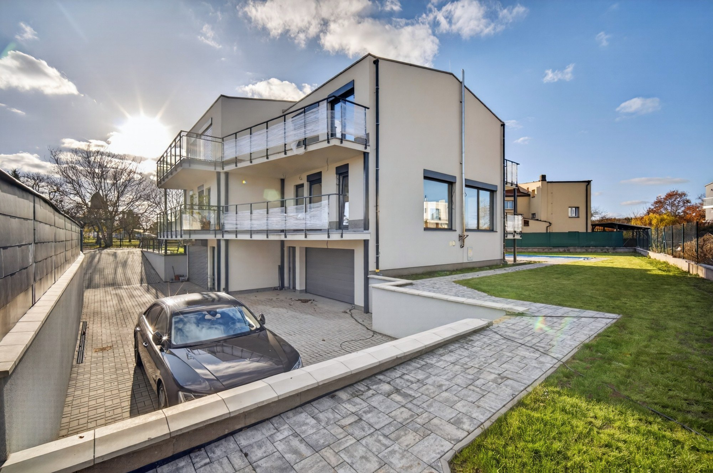
PŘEDPO
Proč: p. Sládek (formulář, fotky): „3 – ano, doplnit trávu?“
Co se změnilo: holá hlína s plevelem vpravo dole mezi chodníkem a trávníkem → souvislý trávník
Výhrada: S hlínou zmizel i barevný odlesk objektivu (flare) v té oblasti. Černý kabel na trávníku z části zůstal (generace ho nakreslila).
7dělal: Sonnet
PŘEDPO
Proč: p. Sládek (formulář, fotky): „7 – Ivan vytrhá plevel a zasype to kůrou – všude, mimo trávu, 8–12 dtto“
Co se změnilo: záhony u domu a pruh u pravého plotu (hlína, plevel) → tmavá kůra
Výhrada: Kůra u pravého plotu je výrazně strukturovaná, mírně jiné zrno než okolí; drobné rostlinky v kůře vpravo; bez vymyšlených staveb.
8dělal: Sonnet
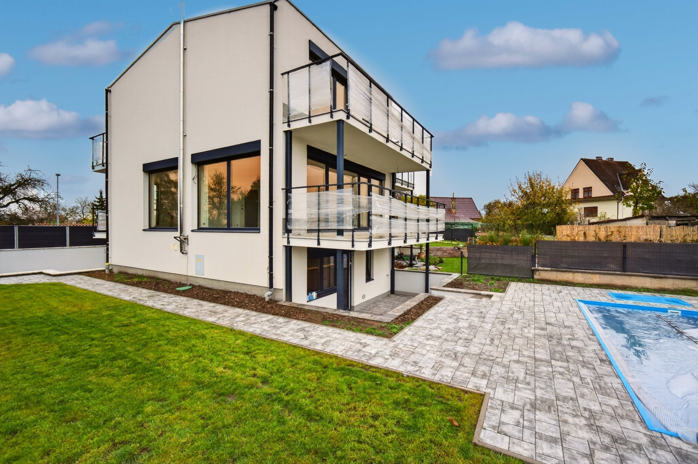
PŘEDPO
Proč: p. Sládek (formulář, fotky): „7 – Ivan vytrhá plevel a zasype to kůrou – všude, mimo trávu, 8–12 dtto“
Co se změnilo: záhon u paty domu (plevel, hlína) → tmavá kůra
Výhrada: Část původního plevele/trsů trávy zůstala u zdi (maska nepřebrala vše); jedna ze dvou zelených krytek zmizela.
9dělal: Opus
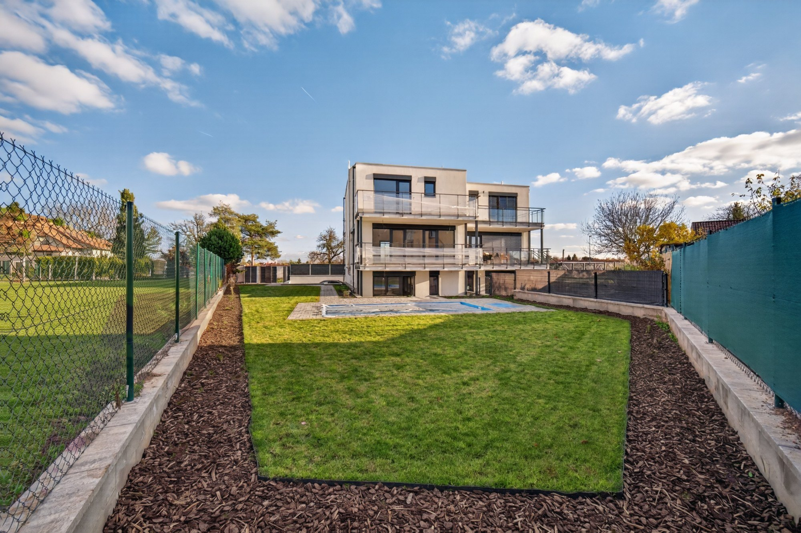
PŘEDPO
Proč: p. Sládek (formulář, fotky): „7 – Ivan vytrhá plevel a zasype to kůrou – všude, mimo trávu, 8–12 dtto“ · Franta: „hromadu hlíny dej všude pryč“ (sjednocení sady)
Co se změnilo: záhony podél obou opěrných zdí a před trávníkem: plevel pryč, zasypáno tmavě hnědou mulčovací kůrou; hromada hlíny a suchá tráva za plotem vlevo → trávník
Výhrada: Za plotem vlevo je nový obsah (trávník a v dálce střechy/stromy sousedů), který si generace domyslela. Kůra je hrubší textury, než by byla v reálu na tuhle vzdálenost (v popředí velké kusy).
10dělal: Sonnet
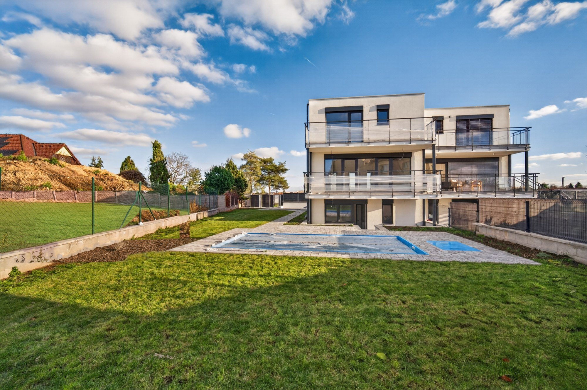
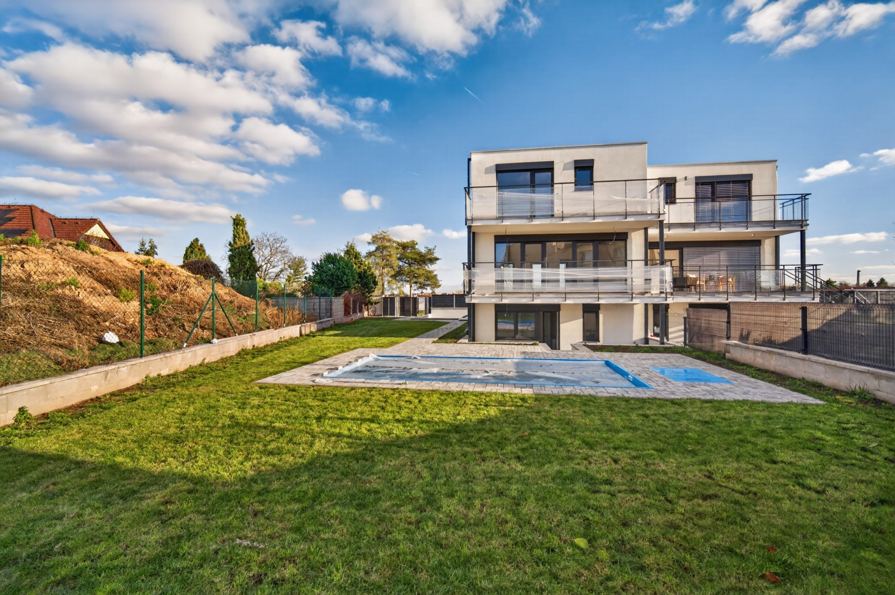
PŘEDPO
Proč: p. Sládek (formulář, fotky): „7 – Ivan vytrhá plevel a zasype to kůrou – všude, mimo trávu, 8–12 dtto“ · Franta: „hromadu hlíny dej všude pryč“ (sjednocení sady)
Co se změnilo: hromada a svah za plotem → trávník; záhon u zídky a u domu → tmavá kůra
Výhrada: Za plotem domyšlený obsah (růžová zídka, trávník). U zídky zůstal malý kus původního suchého plevele (zámek kolem vymyšleného keře). Kůra místy jednotvárná.
11dělal: Sonnet
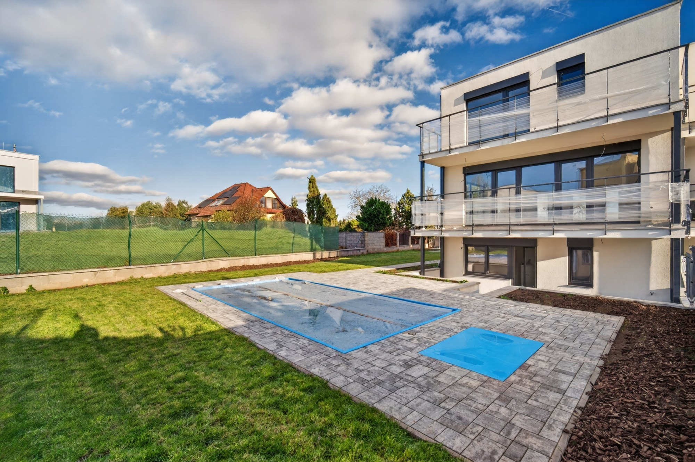
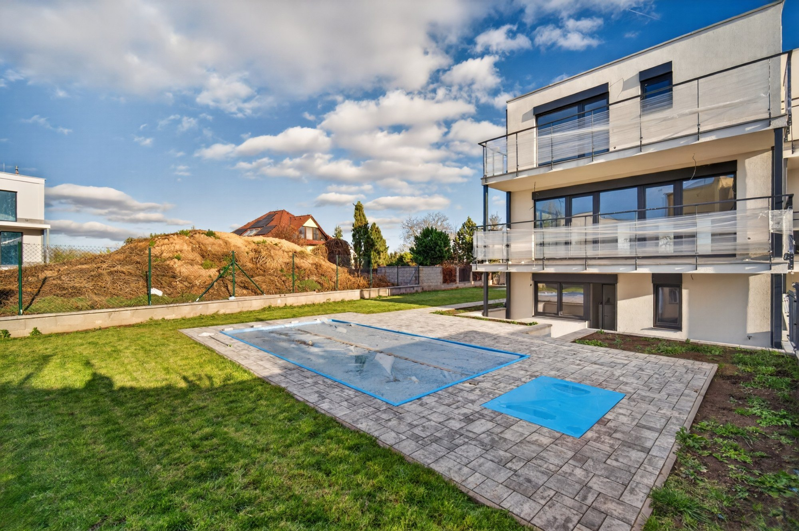
PŘEDPO
Proč: p. Sládek (formulář, fotky): „7 – Ivan vytrhá plevel a zasype to kůrou – všude, mimo trávu, 8–12 dtto“ · Franta: „hromadu hlíny dej všude pryč“ (sjednocení sady)
Co se změnilo: hromada hlíny za plotem → zelený trávník; záhon u domu → tmavá kůra
Výhrada: Za plotem domyšlený obsah (trávník s kopečkem, vzdálené keře a stromy na obzoru); pletivo přes nový trávník působí jako zelená síť; kůra vpravo bez rostlin.
12dělal: Sonnet
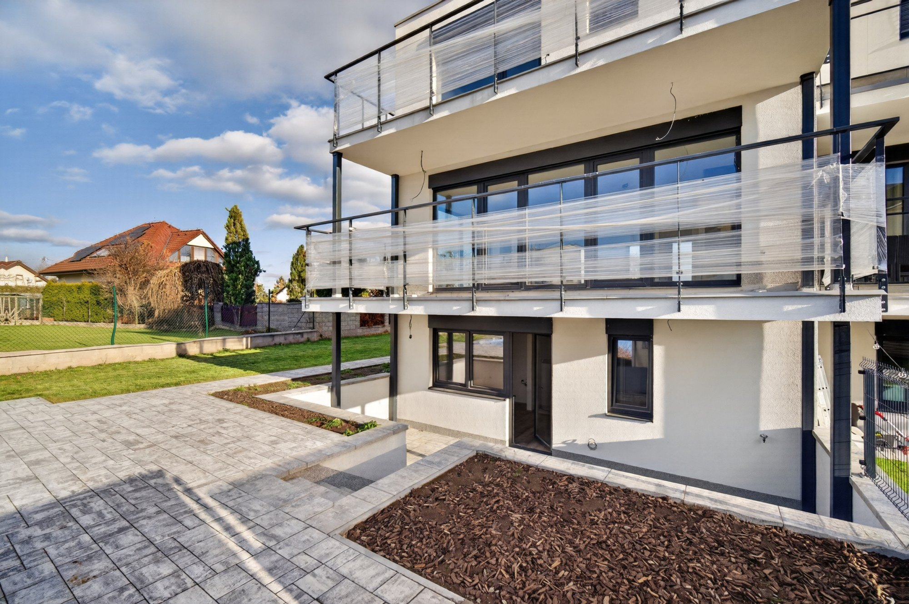
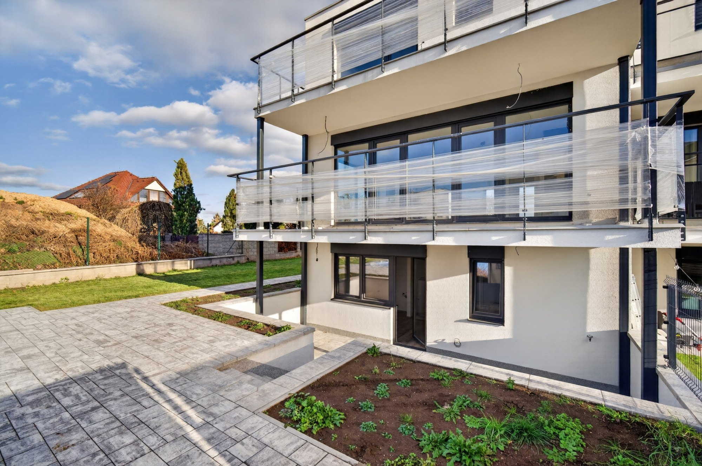
PŘEDPO
Proč: p. Sládek (formulář, fotky): „7 – Ivan vytrhá plevel a zasype to kůrou – všude, mimo trávu, 8–12 dtto“ · Franta: „hromadu hlíny dej všude pryč“ (sjednocení sady)
Co se změnilo: hromada za plotem → trávník; velký záhon u domu (hlína + plevel) → tmavá kůra
Výhrada: Za plotem domyšlený obsah (živý plot, přístřešek, větve stromu, trávník); kůra v záhonu je hrubá a jednotvárná, drobné tmavé skvrny; malý záhon u zídky nahoře zůstal s původní hlínou/plevelem.
13dělal: Opus
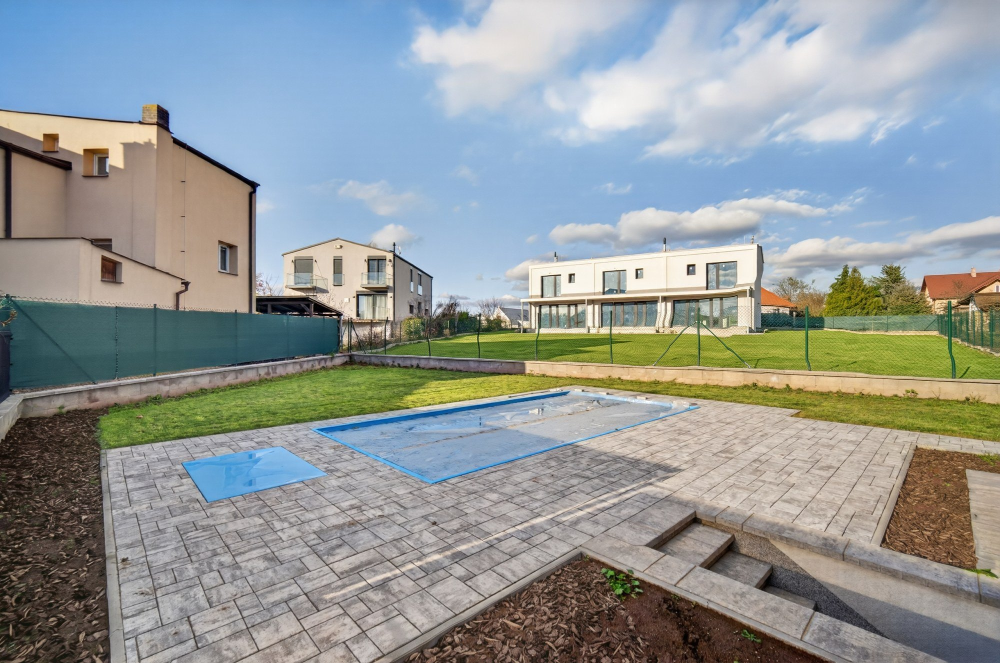
PŘEDPO
Proč: p. Sládek (formulář, fotky): „13 – odstranit hromadu“
Co se změnilo: hromada hlíny za plotem → rovný trávník; záhony vlevo, vpředu a vpravo zasypány kůrou
Výhrada: Za odstraněnou hromadou generace domyslela pozadí (červená střecha, stromy, plot vpravo) – vymyšlený obsah. Dvě drobné rostliny ve spodním záhonu zůstaly (generace je ponechala).
48dělal: Sonnet
PŘEDPO
Proč: p. Sládek (formulář, fotky): „48–49 Ivan lépe uklidí“ · Franta: „vyretušuj ty krabice, trošku to tam zesvětli, ať to vypadá víc profi“
Co se změnilo: jen zesvětlení celé fotky (+0,3 EV ve středních tónech, bílé se nepřepalují); krabice, kartony a role zůstávají
Výhrada: Krabice NEJSOU vyretušované: po 2 generacích NB měla doplněná podlaha/obklad křivé nebo zalomené spáry a těsná maska kolem předmětů by je zakrývala podlahu i obklad. Rovné spáry jsou nepřekročitelné, proto jen zesvětlení originálu. Bílé: pixelů nad 250 je do 0,2 %.
49dělal: Sonnet
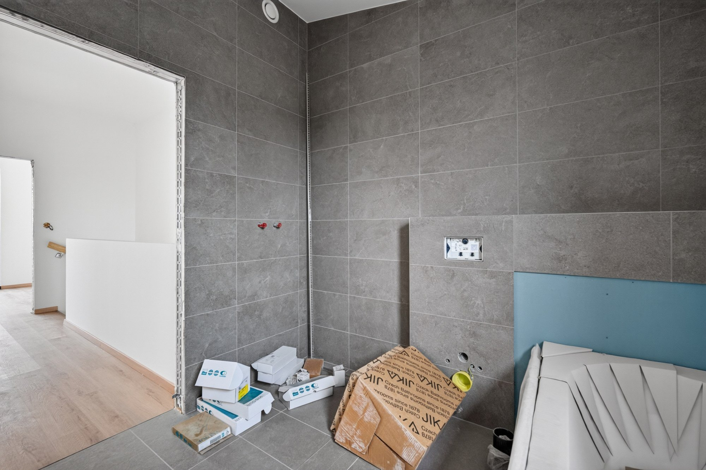
PŘEDPO
Proč: p. Sládek (formulář, fotky): „48–49 Ivan lépe uklidí“ · Franta: „vyretušuj ty krabice, trošku to tam zesvětli, ať to vypadá víc profi“
Co se změnilo: jen zesvětlení celé fotky (+0,3 EV ve středních tónech, bílé se nepřepalují); krabice, kartony a role zůstávají
Výhrada: Krabice NEJSOU vyretušované: po 2 generacích NB měla doplněná podlaha/obklad křivé nebo zalomené spáry a generace domyslela žlab a těsná maska kolem předmětů by je zakrývala podlahu i obklad. Rovné spáry jsou nepřekročitelné, proto jen zesvětlení originálu. Bílé: pixelů nad 250 je do 0,2 %.
54dělal: Opus
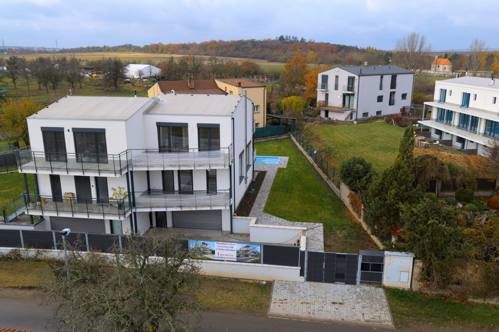
PŘEDPO
Proč: p. Sládek (formulář, fotky): „54 – A s retušemi záhonů, bordelu před plotem a hromady (ta se mi zdá nejlépe použitelná)“
Co se změnilo: hromada hlíny, suchá tráva a stavební materiál na sousedním pozemku nahrazeny posekaným trávníkem; úzký záhon u domu vpravo zasypán tmavou mulčovací kůrou; pás u silnice (páska, holá hlína, plevel) nahrazen travnatým pásem
Výhrada: Trávník u sousedů je nový (vymyšlený obsah místo hromady), působí čistě, ale je to retuš. Pás u silnice pod větvemi stromu: tráva prosvítá mezi větvemi, větve zůstaly z originálu. Zbytek palet a stavebního materiálu u sousedů vpravo nahoře ponechán (mimo polygon).
55dělal: Opus
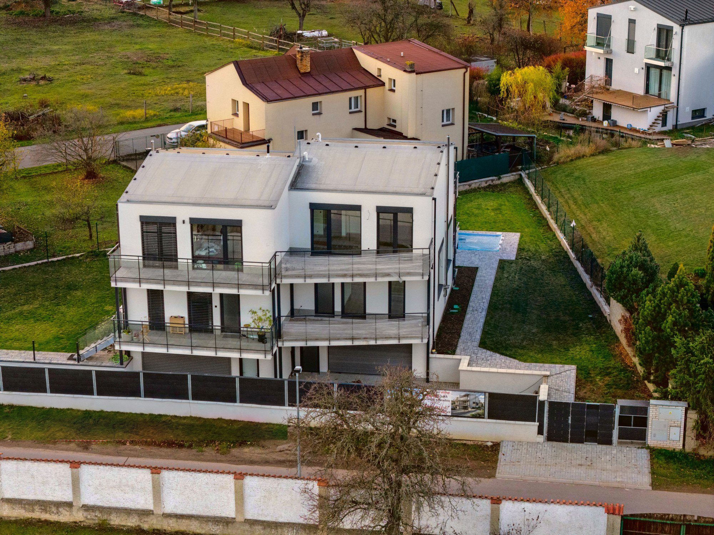
PŘEDPO
Proč: p. Sládek (formulář, fotky): „55, 56, 57, 58, 59 – A dtto“ (= retuše záhonů, bordelu před plotem a hromady)
Co se změnilo: hromada hlíny a suchá tráva na sousedním pozemku → posekaný trávník; pás u silnice (páska, plevel, keře) → travnatý pás; úzký záhon u domu → kůra
Výhrada: Trávník u sousedů je vymyšlený obsah místo hromady. Stavební materiál nahoře u sousedů ponechán (mimo polygon). Jehličnany v popředí jsou z originálu.
56dělal: Sonnet
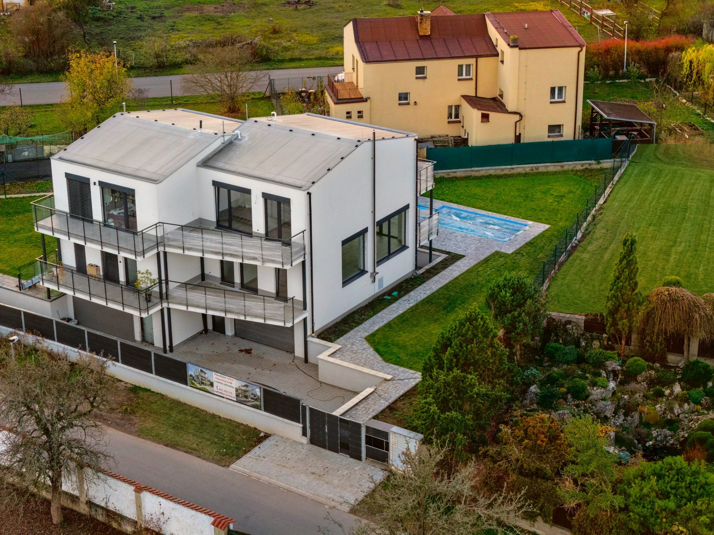
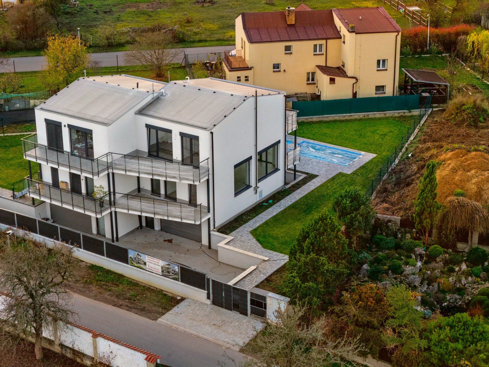
PŘEDPO
Proč: p. Sládek (formulář, fotky): „55, 56, 57, 58, 59 – A dtto“ (= retuše záhonů, bordelu před plotem a hromady)
Co se změnilo: hromada hlíny a suchý svah za plotem → zelený trávník; neupravený pás mezi zdí a silnicí → posekaná tráva
Výhrada: Domyšlený trávník s pruhy po sekání, vpravo nahoře původní svah ponechán. U pásu u silnice je vlevo svislá hrana přechodu do původní hlíny; tráva tmavší/syntetičtější než okolí; pás je při pozornosti patrně upravený.
57dělal: Sonnet
PŘEDPO
Proč: p. Sládek (formulář, fotky): „55, 56, 57, 58, 59 – A dtto“ (= retuše záhonů, bordelu před plotem a hromady)
Co se změnilo: hromada hlíny a rumiště u sousedů → zelený trávník; neupravený pás u silnice před plotem → posekaná tráva
Výhrada: Domyšlený trávník bez terénního valu (původní hromada měla tvar, nový povrch je plochý a hladký, jemné pruhy po sekání); u pásu u silnice se spodní konec přechází do původního stavu; zbytek rumiště vpravo nahoře ponechán.
58dělal: Sonnet
PŘEDPO
Proč: p. Sládek (formulář, fotky): „55, 56, 57, 58, 59 – A dtto“ (= retuše záhonů, bordelu před plotem a hromady)
Co se změnilo: hromada hlíny, suchý svah a rumiště u sousedů → zelený trávník; záhon u domu → kůra; zarostlý pás mezi zdí a silnicí → posekaná tráva
Výhrada: Domyšlený trávník má tvar původního valu (hladký kopec s jemnými pruhy po sekání); vpravo nahoře u sousedova materiálu zůstal původní suchý svah a stavební materiál. U pásu u silnice zůstal na hraně k vozovce pruh původní hlíny a při zdi suché stonky.
59dělal: Sonnet
PŘEDPO
Proč: p. Sládek (formulář, fotky): „55, 56, 57, 58, 59 – A dtto“ (= retuše záhonů, bordelu před plotem a hromady)
Co se změnilo: hromada hlíny, suchý svah a stavební materiál u sousedů → zelený trávník; neupravený pás mezi zdí a silnicí → posekaná tráva
Výhrada: Domyšlený plochý trávník s jemnými pruhy po sekání místo valu; sousedův materiál a suchý svah vpravo nahoře ponechány. Pás u silnice upraven jen v pravé části (vlevo zůstal plevel a páska), na hraně vozovky pruh původní hlíny.
68dělal: Opus
PŘEDPO
Proč: p. Sládek (formulář, fotky): „68, 69, 71–76 – A s retušemi bordelu a hromady“
Co se změnilo: hromada hlíny, suchá tráva a stavební materiál (palety, IBC nádrž, zelené balíky, prkna) na sousedním pozemku za domem → posekaný trávník
Výhrada: Vpravo dole v novém trávníku zůstala tmavá skvrna – zbytek tmavé vegetace z originálu (ochrana jehličnanů ji ponechala); vypadá jako stín keře. Při opravě: snížit jehl_min nebo přidat polygon. Na levém horním okraji zůstal tenký proužek původní hlíny. jpeg_vloz hlásí 3380 změněných px mimo bloky = chroma 4:2:0 na hraně bloku (≤1 px), kontrola s okrajem 16 px = 0.
69dělal: Sonnet
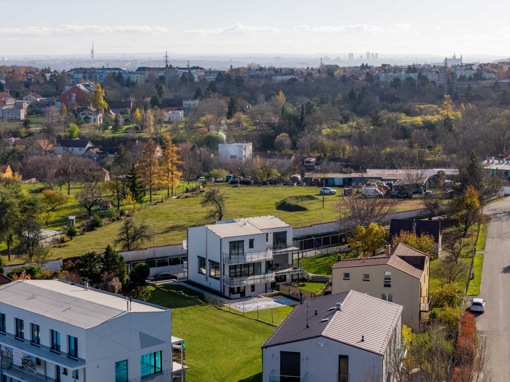
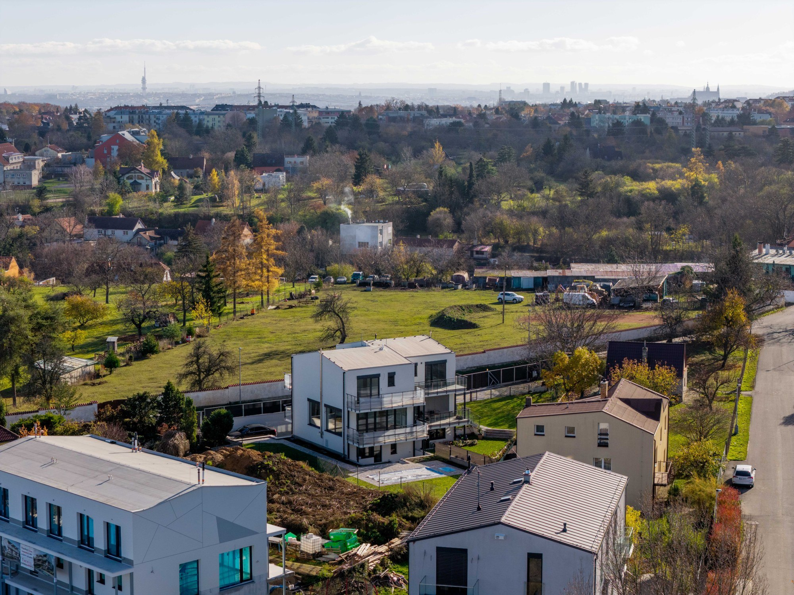
PŘEDPO
Proč: p. Sládek (formulář, fotky): „68, 69, 71–76 – A s retušemi bordelu a hromady“
Co se změnilo: hromada, rumiště a stavební materiál na sousedním pozemku → zelený trávník
Výhrada: Domyšlený trávník a nový keř/strom vlevo nahoře; u terasy sousedního domu zůstal úzký pruh původního stavebního materiálu (zelené fólie, modrá plachta); pruh plotu vpravo mírně zvlněný.
71dělal: Sonnet
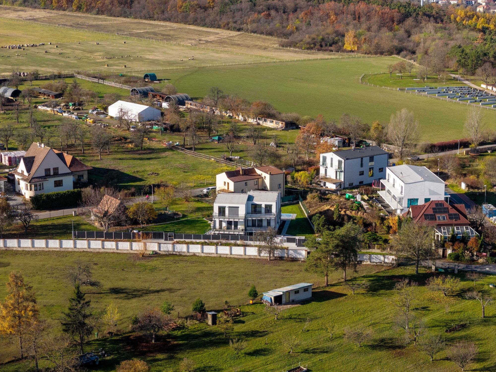
PŘEDPO
Proč: p. Sládek (formulář, fotky): „68, 69, 71–76 – A s retušemi bordelu a hromady“
Co se změnilo: hromady hlíny, plevel a stavební materiál na sousedním svahu → zelený trávník
Výhrada: Domyšlený plochý trávník místo svahu; horní hrana trávníku k sousedovu dřevu a dřevěné stavbě je mírně zvlněná; materiál sousedů nahoře ponechán.
72dělal: Sonnet
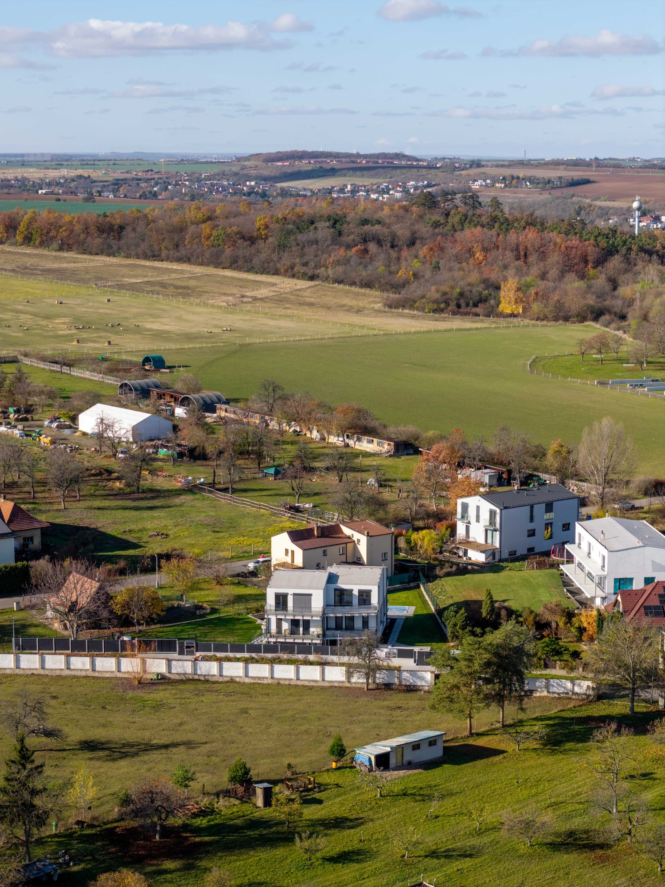
PŘEDPO
Proč: p. Sládek (formulář, fotky): „68, 69, 71–76 – A s retušemi bordelu a hromady“
Co se změnilo: hromady hlíny a stavební materiál na sousedním svahu → zelený trávník
Výhrada: Domyšlený trávník místo svahu; vlevo zůstal pruh původního suchého plevele, horní hrana trávníku zvlněná; materiál sousedů nahoře ponechán.
73dělal: Sonnet
PŘEDPO
Proč: p. Sládek (formulář, fotky): „68, 69, 71–76 – A s retušemi bordelu a hromady“
Co se změnilo: hromada hlíny a rumiště za oplocením sousedů → zelený trávník (malé dvě plochy)
Výhrada: Domyšlený obsah: trávník s nízkou kamennou zídkou a tmavým valem v hloubce; plochy jsou drobné a daleko, tvar trávníku působí mírně uměle.
74dělal: Sonnet
PŘEDPO
Proč: p. Sládek (formulář, fotky): „68, 69, 71–76 – A s retušemi bordelu a hromady“
Co se změnilo: hromada hlíny a suchý svah za sousedním plotem → zelený trávník
Výhrada: Domyšlený trávník s jemnými vlnitými pruhy po sekání, vlevo nepřirozeně zaoblený okraj trávníku jako obrubník; po stranách tvrdší přechod do původního plevele.
75dělal: Sonnet
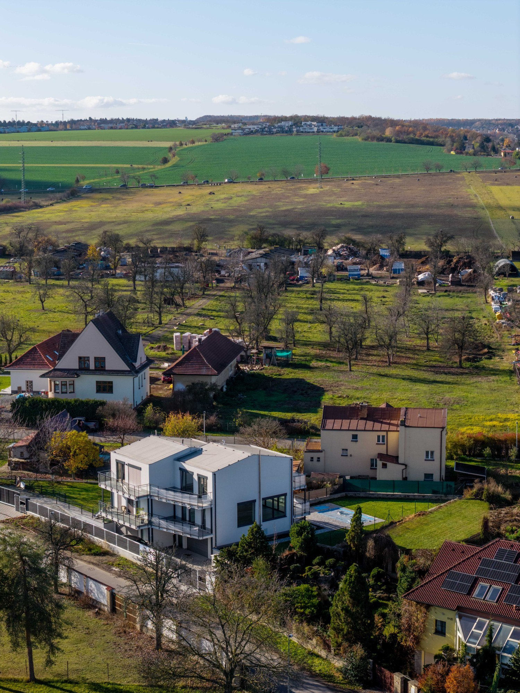
PŘEDPO
Proč: p. Sládek (formulář, fotky): „68, 69, 71–76 – A s retušemi bordelu a hromady“
Co se změnilo: hromada hlíny a suchý svah za plotem našeho pozemku → zelený trávník
Výhrada: NB do pravé části domyslel řadu thují – ta část je z originálu, proto trávník vpravo končí svislým (rozmazaným) přechodem do původního suchého svahu; vlevo zůstala drobná hromádka hlíny u zdi.
76dělal: Sonnet
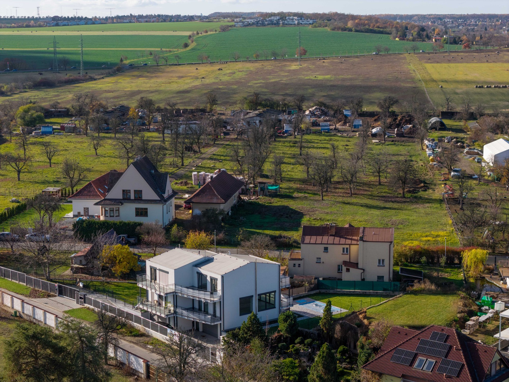
PŘEDPO
Proč: p. Sládek (formulář, fotky): „68, 69, 71–76 – A s retušemi bordelu a hromady“
Co se změnilo: hromada hlíny a suchý svah u sousedů → zelený trávník; dva malé pásy u silnice vlevo → tráva
Výhrada: Domyšlený plochý trávník s vlnitým vzorem sekání; vpravo trávník končí poměrně svislou hranou do původního svahu, nahoře tmavý pruh při plotu. Pásy u silnice vlevo: tráva je syté zelená a levý pás je převeden jen zpola (zbytek zůstal pod listím, mezi nimi znatelný přechod).
Test: stejné retuše v ChatGPT (pro srovnání) 11
1 ChatGPT test dělal: GPT-6 (Astra)
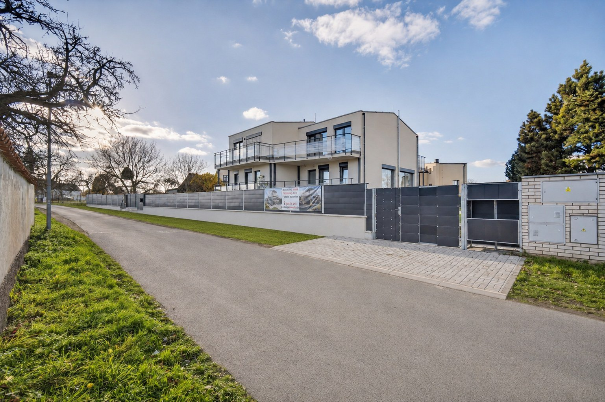
PŘEDPO
Proč: Franta: test – stejné zadání v ChatGPT pro srovnání s naší metodou
Co se změnilo: Pás mezi bílou podezdívkou plotu a silnicí (suché keře, plevel, hlína, klacky) nahrazen posekaným travnatým pásem.
Výhrada: Záběr neposunut (balkon, plot, brána sedí, odhad do ~3 px). Stavba, ploty, brána, dlažba a nebe beze změny, žádné vymyšlené objekty. Vady: světlejší/zelenější a čistě rovný pás trávy vypadá uměle, jemné detaily vzdálených stromů a keřů zjednodušené a méně syté (teplé listí zmatnělo), celkově mírně měkčí obraz. Rozlišení výstupu 1537x1023 px.
3 ChatGPT test dělal: GPT-6 (Astra)
PŘEDPO
Proč: Franta: test – stejné zadání v ChatGPT pro srovnání s naší metodou
Co se změnilo: Holá hlína s plevelem vpravo dole mezi chodníkem a trávníkem nahrazena souvislým trávníkem.
Výhrada: Záběr neposunut (dům, auto, balkony sedí, odhad do ~3 px). Změna odpovídá zadání, žádný vymyšlený objekt v ploše. Vady: nový trávník je světlejší a sytější než zbytek, na pravém okraji záběru se objevil malý bílý útvar a změněná linie plotu u bazénu (drobné vymyšlené detaily), jemné detaily vzdálené zástavby a stromů zjednodušené, obraz o něco měkčí. Rozlišení výstupu 1539x1022 px.
7 ChatGPT test dělal: GPT-6 (Astra)
PŘEDPO
Proč: Franta: test – stejné zadání v ChatGPT pro srovnání s naší metodou
Co se změnilo: Záhony u domu a pruh u pravého plotu (hlína, plevel) zasypány tmavě hnědou kůrou.
Výhrada: Záběr neposunut (dům, sousední dům, bazén sedí, odhad do ~3 px). Vady: kromě záhonů ChatGPT přegeneroval i trávník (jiná textura, zmizely holé plochy a stín na pravém pruhu – změna mimo zadání), pruh u plotu je jednolitá tmavá kůra bez okrajů, drobné zjednodušení vzdálených stromů a bazénové fólie; žádný vymyšlený velký objekt. ChatGPT u této fotky nabídl 2 varianty (A/B), vzata varianta 1. Rozlišení výstupu 1537x1023 px.
9 ChatGPT test dělal: GPT-6 (Astra)
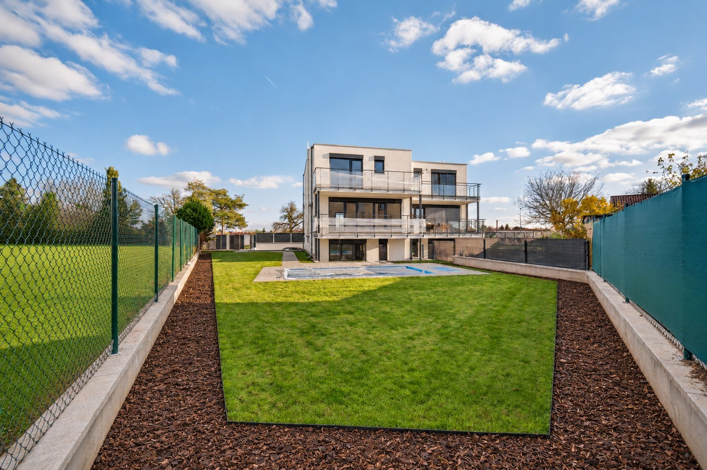
PŘEDPO
Proč: Franta: test – stejné zadání v ChatGPT pro srovnání s naší metodou
Co se změnilo: Záhony podél obou opěrných zdí a před trávníkem zbaveny plevele a zasypány tmavě hnědou kůrou; hromada hlíny a suchá tráva za plotem vlevo nahrazeny rovným trávníkem.
Výhrada: Záběr neposunut (dům, bazén, ploty sedí, odhad do ~3 px). Změny odpovídají zadání, žádný velký vymyšlený objekt. Vady: za plotem vlevo ChatGPT vymyslel vzdálené jehličnany a rovný obzor (originál tam měl svah), kůra tvoří souvislý hladký pás (mimo okraje trávníku se stírá hranice, zmizely původní drobné rostliny v záhonech), obraz o něco měkčí, jemné detaily dálky (stromy vpravo, střechy) zjednodušené. Rozlišení výstupu 1537x1023 px.
13 ChatGPT test dělal: GPT-6 (Astra)
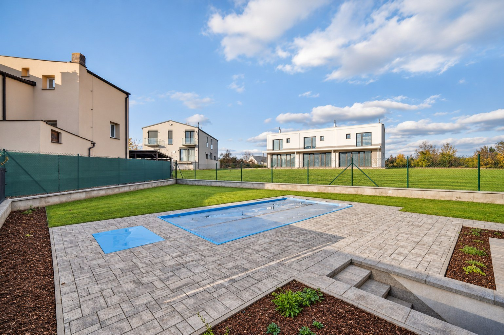
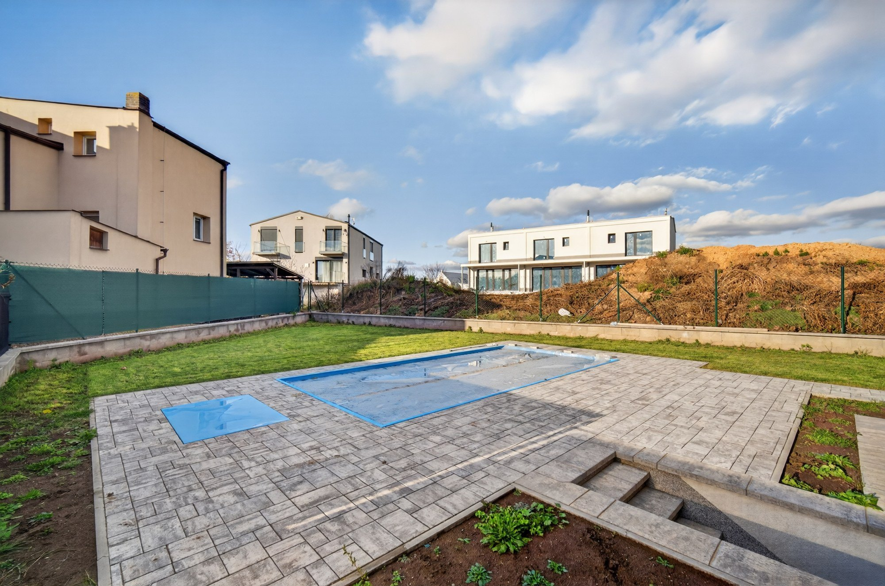
PŘEDPO
Proč: Franta: test – stejné zadání v ChatGPT pro srovnání s naší metodou
Co se změnilo: Hromada hlíny za plotem nahrazena rovným trávníkem; záhony vlevo, vpředu a vpravo zasypány tmavě hnědou kůrou (původní malé rostliny ponechány).
Výhrada: Záběr neposunut (domy, bazén, schody sedí, odhad do ~3 px). Vady: za plotem vpravo ChatGPT vymyslel řadu podzimních stromů a rovný obzor (originál: hromada, za ní nic), rostlinky v záhonech mírně přerovnané/domalované (nejsou přesně původní), pletivo plotu přes nový trávník jemnější, celkově měkčí obraz; stavby, ploty a dlažba zachovány. Rozlišení výstupu 1539x1022 px.
48 ChatGPT test dělal: GPT-6 (Astra)
PŘEDPO
Proč: Franta: test – stejné zadání v ChatGPT pro srovnání s naší metodou (koupelny jdou do finálu, pokud projdou)
Co se změnilo: ChatGPT odstranil krabice, role, sáčky a materiál z podlahy a stěny, doplnil dlažbu a lehce zesvětlil celou fotku (prompt Frantův: +0,3 EV).
Výhrada: PROŠLO – kandidát do finálu. Spáry podlahy i stěn rovné a navazující, vana s fólií, modrá deska, výstupy vody i žlutá záslepka na místě; záběr neposunut (odhad do ~3 px, okno/vana/strop sedí). Drobné vady: zmizel tenký podlahový žlab/odtok vlevo dole (v originálu byl pod krabicí – ChatGPT ho vymazal), zmizel sluneční přechod na levé stěně (plošší světlo), textura dlaždic mírně vyhlazená; výstup jen 1543 px široký (60 % originálu 2560). Rozlišení výstupu 1543x1019 px.
49 ChatGPT test dělal: GPT-6 (Astra)
PŘEDPO
Proč: Franta: test – stejné zadání v ChatGPT pro srovnání s naší metodou (koupelny jdou do finálu, pokud projdou)
Co se změnilo: ChatGPT odstranil krabice, kartony a obaly z podlahy u rohu, doplnil dlažbu a lehce zesvětlil fotku (Frantův prompt, +0,3 EV; věta o neměnění vpravo od levého okraje vany).
Výhrada: PROŠLO – kandidát do finálu. Spáry podlahy a stěn rovné a navazující, vana s fólií, modrá deska, výstup a žlutá záslepka na místě, dveřní otvor, dřevěná podlaha a lišta beze změny; záběr neposunut (vizuálně shodný). Drobné vady: celá fotka světlejší, textura dlaždic mírně vyhlazená a doplněná dlažba v rohu je čistší než okolí; výstup jen 1537 px široký (60 % originálu 2560). Rozlišení výstupu 1537x1023 px.
54 ChatGPT test dělal: GPT-6 (Astra)
PŘEDPO
Proč: Franta: test – stejné zadání v ChatGPT pro srovnání s naší metodou
Co se změnilo: Hromada hlíny, suchá tráva a stavební materiál na sousedním pozemku nahrazeny posekaným trávníkem; záhon u domu vpravo zasypán kůrou; pás u silnice (páska, hlína, plevel) nahrazen travnatým pásem.
Výhrada: Záběr neposunut (dům, plot, sousední domy sedí, odhad do ~4 px). Všechny 3 změny provedeny, bazén ani cesta nepřidány. Vady: jehličnany a keře v popředí vpravo PŘEKRESLENY (jiný tvar, vznikl vysoký sloupovitý jehličnan), vpravo za plotem přibyl živý plot/keře, zmizela červená konstrukce u sousedního domu, nový trávník je jednolitý a sytější, jemné detaily větví a drobné stavby v dálce zjednodušené. Výstup má jen 1536 px (originál 12288 px = 12 %) – pro dron prakticky nepoužitelné bez AI upscalu. Rozlišení výstupu 1536x1024 px.
56 ChatGPT test dělal: GPT-6 (Astra)
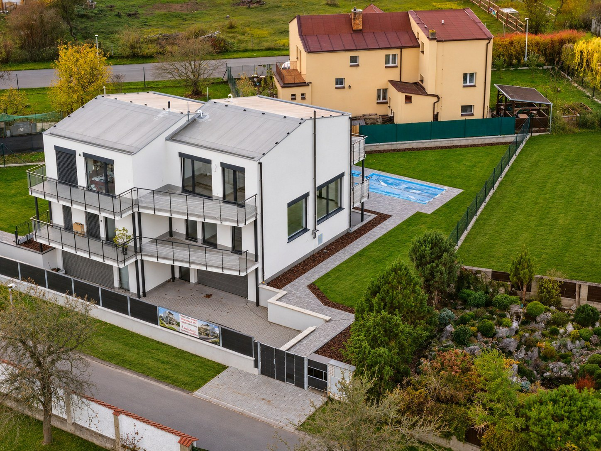
PŘEDPO
Proč: Franta: test – stejné zadání v ChatGPT pro srovnání s naší metodou
Co se změnilo: Hromada hlíny a suchá tráva na sousedním pozemku nahrazeny rovným trávníkem; záhony u domu a nepořádek před plotem u silnice nahrazeny kůrou / travnatým pásem.
Výhrada: Záběr neposunut (dům, sousední dům, bazén sedí, odhad do ~5 px). Všechny změny provedeny, bez vymyšleného bazénu/cesty. Vady: překreslené okno na pravé stěně domu (jiný odlesk, zelenavé sklo), skalka a jehličnany vpravo dole přetvořeny (jiné tvary rostlin), změněná plachta bazénu, hladší textura střech a trávy; výstup jen 1448x1086 px (originál 8056 px = 18 %) – pro dron málo. Rozlišení výstupu 1448x1086 px.
68 ChatGPT test dělal: GPT-6 (Astra)
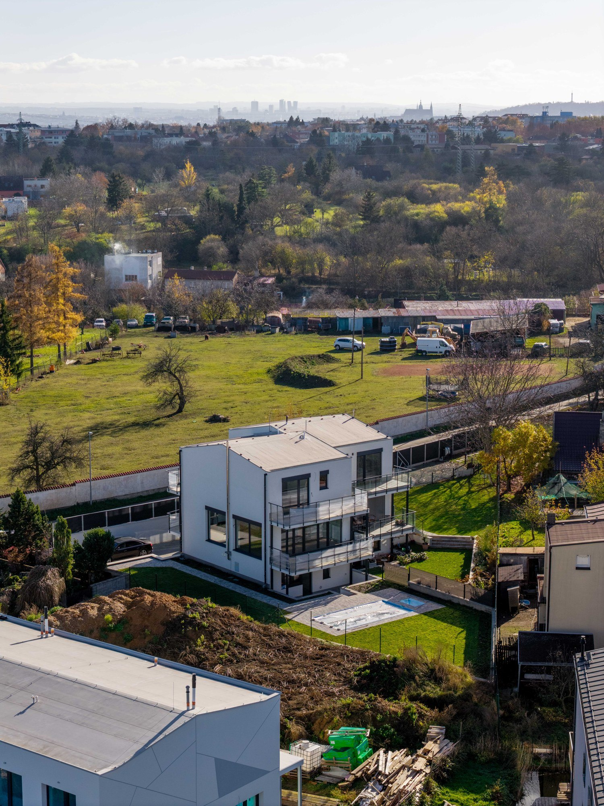
PŘEDPO
Proč: Franta: test – stejné zadání v ChatGPT pro srovnání s naší metodou
Co se změnilo: Hromada hlíny, suchá tráva a stavební materiál (palety, IBC nádrž, zelené balíky, prkna) na sousedním pozemku za domem nahrazeny rovným posekaným trávníkem.
Výhrada: Záběr neposunut (dům, střecha, sousední stavby sedí, odhad do ~4 px), změna přesně dle zadání, bazén/cesta/objekty nepřidány. Vady: ostrůvek keřů a kamenů vlevo dole u střechy zmizel (i mimo hromadu), plot pozemku a stíny v trávníku vypadají přegenerované (jiná struktura), bazén a jeho okolí mírně změněné, vzdálená auta/dílna a keře v pozadí zjednodušené; celkově měkčí obraz; výstup jen 1086x1448 px (originál 8056 px na výšku = 18 %). Rozlišení výstupu 1086x1448 px.
73 ChatGPT test dělal: GPT-6 (Astra)
PŘEDPO
Proč: Franta: test – stejné zadání v ChatGPT pro srovnání s naší metodou
Co se změnilo: Zadání (hromada/hlína u sousedů, záhony, pás před plotem) na této širší fotce působí jen drobně: ChatGPT vyčistil hnědé plochy a nepořádek v zahradách sousedů a sjednotil trávu.
Výhrada: Záběr neposunut (domy, plot, silnice sedí, odhad do ~5 px), žádné velké vymyšlené objekty. Vady: stromy a ovocné stromky v popředí PŘEKRESLENY (jiné větvení a rozmístění), drobná zástavba, auta a kůlny v pozadí zjednodušené/posunuté o několik px, tráva sytější a hladší; změna oproti originálu je nízká a těžko čitelná, takže výsledek nelze považovat za jednoznačně splněné zadání. Výstup jen 1448x1086 px (originál 6313 px = 23 %). Rozlišení výstupu 1448x1086 px.
Exteriérové vizualizace 6
P1194788 Zahrada s bazénem dělal: Opus
PŘEDPO
Proč: p. Sládek (formulář): „Určitě vylepšit trávu a okolo plotů výsadbu, jinak je to hrozně strohé a vpravo nějaký živý plot...“ · do telefonu Frantovi: rostliny / záhony po stranách pozemku u plotů
Co se změnilo: Ze schválené verze kola 4, jen oblasti změny (Higgsfield NB Pro 2K Unlimited, 0 kr.; 2 generace za sebou: p1 výsadba, p2 trávník na výsledku p1 – do snímku převzaty všechny zóny z p2, zarovnání 0,64 px). Vlevo u paty opěrné zdi záhon s mulčem (okrasné trávy, levandule, buxusové koule), nízko – zeď nad ním vidět. Vpravo stříhaný živý plot (bobkovišeň) u opěrné zdi s horní hranou u horní hrany plotu, plot nad ním vidět, před ním pás levandule a trav. Trávník hustý, svěží, bez holých míst; světlo a teplota barvy trávníku převzaty z původní verze (slunce/stín). Vše ostatní (dům, bazén, dlažba, lehátka, nebe, stromy) beze změny – vloženo bezeztrátově po blocích JPEG, mimo měněné bloky 0.
Výhrada: Úzký pruh trávníku úplně vzadu za lehátky zůstal původní (lehce žlutější). Šmouha u kolečka lehátka (vada už v kole 4) zůstala – je mimo oblast změny. Záhon vlevo je v popředí širší (perspektiva), rostliny v popředí zakrývají spodek zdi.
P1194788_vecer Zahrada s bazénem – večer dělal: Opus
PŘEDPO
Proč: Náš návrh: stejná výsadba jako na denní verzi (Sládek: „Určitě vylepšit trávu a okolo plotů výsadbu, jinak je to hrozně strohé a vpravo nějaký živý plot...“), ať den a večer sedí
Co se změnilo: Ze schválené večerní verze kola 4, stejné zóny jako denní 0788 (Higgsfield NB Pro 2K Unlimited, 1 generace, vstup = večer kolo 4 + nová denní 0788 jako vzor výsadby; zarovnání 0,79 px). Stejný záhon vlevo, stejný živý plot vpravo s pásem levandule a trav, hustý trávník. Sluneční stín, který generace na trávník přenesla z denního vzoru, vyrovnán; jas a barva trávníku a záhonů převzaty z večerní verze (modrá hodina). Dům, okna, bazén, nebe beze změny – bezeztrátově mimo měněné bloky.
Výhrada: Na trávníku vlevo je při zvětšení slabě znát zbytek přechodu po vyrovnaném stínu (světlejší pás). Trávy v levém záhonu jsou nasvícené o kousek tepleji než okolí (generace).
dron_0724 Dům a Praha v dálce z dronu dělal: Opus
PŘEDPO
Proč: p. Sládek (formulář): „asi ano, ale je to hodně potlačené tím trojdomem, podle mě by to chtělo bližší pohled upravit tu zahrádku u krajového trojdomu...protáhnout linii toho šikmého plotu v její rovině“
Co se změnilo: BLIŽŠÍ POHLED (výřez A): nový výřez z originálu DJI_0724 v plném rozlišení (8056 px), oblast x 1817–6484, y 950–4450 (4667 × 3500 px) zmenšená na 2560 × 1920 – dům B ~1,8× větší, Praha (Pankrác, Hrad) zůstává nahoře, trojdům jen roh střechy vlevo dole. Z originálu je vše kromě 6 zón z 1 generace NB Pro 2K Unlimited (zarovnání 0,96 px, doostřeno na detail originálu): čisté sklo 4 balkonů domu B (bez fólie), bazén s vodou a světlým lemem bez plachty a stavebního pletiva, dlažba, záhon u domu, zahrádka před bazénem místo zarostlého svahu (trávník + nízký živý plot), pás trávníku s keři podél šikmého pletivového plotu vpravo – plot vede rovně ve své linii až k dolnímu okraji. Hnědá zástěna s podezdívkou za bazénem, horní terasy, sousedé a schodiště vlevo z originálu.
Výhrada: Výklad „šikmý plot“ = pletivový plot domu B vpravo, šikmý k domu (podle situace S1B) – POTŘEBA POTVRDIT u p. Sládka. Poklop technické šachty vpravo od bazénu na tomto výřezu chybí (generace ho nahradila dlažbou). Dole podél živého plotu zůstalo pletivo se sloupky (z generace). Boční schodiště vlevo od domu je zatím původní (čeká na render z nového modelu). Malé skleněné výplně na levé straně domu mají ještě fólii (malé, mimo zóny). Po změně výřezu nejde srovnávat pixel s kolem 4 – před/po ukazuje kolo 4 zvětšené na stejný výřez.
P1194790 Bazén a terasy dělal: Opus
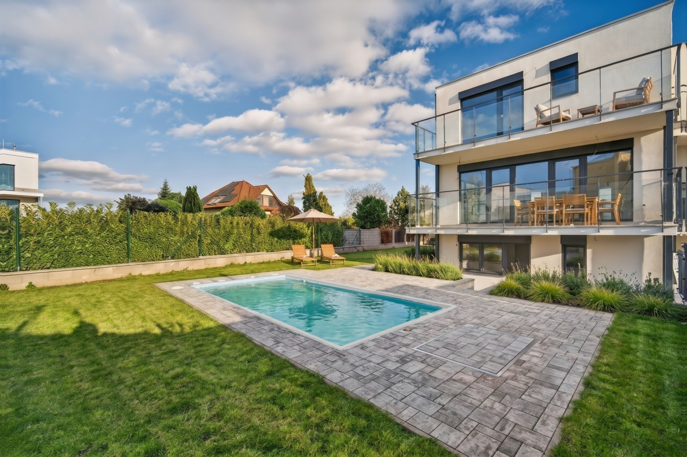
PŘEDPO
Proč: p. Sládek (formulář): „Ano, trochu vylepšit trávu, jako na předních pohledech a podle plotu nějakou výsadbu“
Co se změnilo: Ze schválené verze kola 4, jen oblasti změny (Higgsfield NB Pro 2K Unlimited, 1 generace se vzorem nové 0788; zarovnání 0,83 px). Podél levé opěrné zdi stejný záhon jako na 0788 (mulč, okrasné trávy, levandule, buxusové koule), nízko pod hranou zdi. Trávník vlevo v popředí a pás vpravo hustší a zelenější; světlo, stín domu a teplota barvy trávníku převzaty z kola 4. Dům, bazén, dlažba, poklop, lehátka, plot se živým plotem, nebe beze změny (bezeztrátové vložení po blocích JPEG).
Výhrada: Živý plot vpravo z tohoto pohledu vidět není (je za kamerou). Druhý pokus o trávník (p2) zamítnut: přidal svislé pruhy stínů, které ve fotce nejsou. Pás trávníku vpravo je zlepšený jen mírně.
P1194761 Dům od vjezdu se schodištěm dělal: Opus
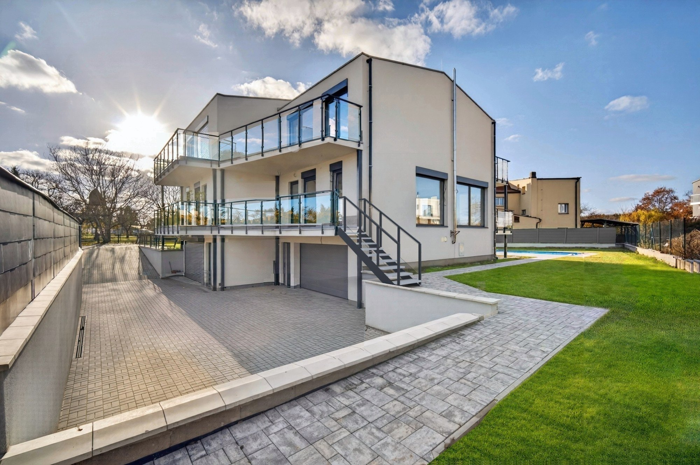
PŘEDPO
Proč: p. Sládek (formulář): „naznačit nízké schodiště? a zábradlí na zídkách-bude muset být...“ · schůdky zatím ne (neznáme výšku dlažby)
Co se změnilo: Varianta A: jednoduché ocelové zábradlí v antracitu (barva podle schodiště domu), bez skla – sloupky 40 mm à ~1,3 m, madlo a 2 vodorovné pásnice. Na přední zídce (horní dlažba → dvůr, po celé viditelné délce) cca 1 m nad horní dlažbou a na bílé zídce u paty schodiště (vyšší pás → dvůr) od paty schodiště po konec zídky. Kresba v perspektivě fotky (kalibrovaná kamera kola 3, svislice svislé, výška oka 1,55 m – odhad), 4× vyhlazené hrany, zrno, kontaktní stín patek; jen pixely zábradlí, zbytek bezeztrátově z kola 4. Schodiště beze změny.
Výhrada: Výška zábradlí je odvozená z odhadu výšky oka (1,55 m) – nejistota ±10 %. Zábradlí je kresba (ploché profily s jednou světlou hranou), při 100 % méně plastické než renderované schodiště. Vlastní stín zábradlí na dlažbu nekreslen (slunce v protisvětle, stín by padal ke kameři – jen kontaktní stín patek). Varianta B se schůdky nevznikla – viz zpráva.
dron_0741 Dům se zahradou z dronu dělal: Opus
PŘEDPO
Proč: Náš návrh: Sládek se k tomuto dronu nevyjádřil – doplněný stejný záhon jako na zahradě s bazénem, ať sada sedí
Co se změnilo: Doplněn stejný záhon jako na 0788/0790: podél paty zídky se živým plotem (hranice zahrady B za lehátky) úzký pás s mulčem, okrasnými travami, levandulí a buxusovými koulemi. 1 generace NB Pro 2K Unlimited jen výřezu 810 × 540 px (zarovnání 0,41 px), vloženo jen v pásu záhonu podle mapy rozdílu (25 700 px, měkký okraj 2 px), bezeztrátově po blocích JPEG – vše ostatní beze změny z kola 4.
Výhrada: Pod živým plotem je nově vidět světlý líc zídky nad záhonem (jako na 0788). Živý plot vpravo z 0788 je z tohoto pohledu zakrytý střechou domu v popředí.
Interiéry podle výkresu 7
P1194937 Obývací prostor – hlavní pohled dělal: Opus
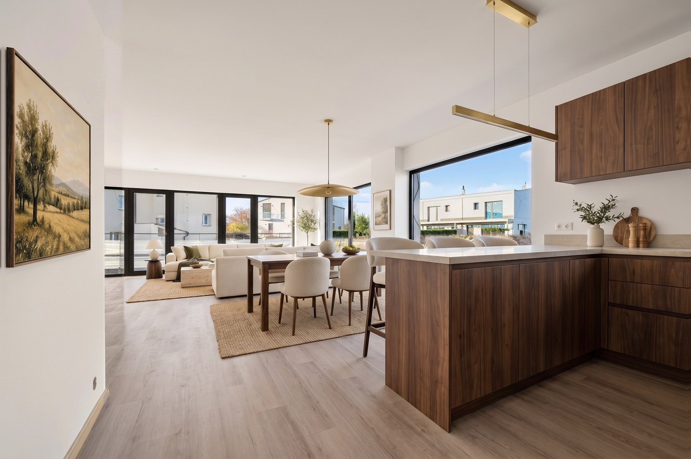
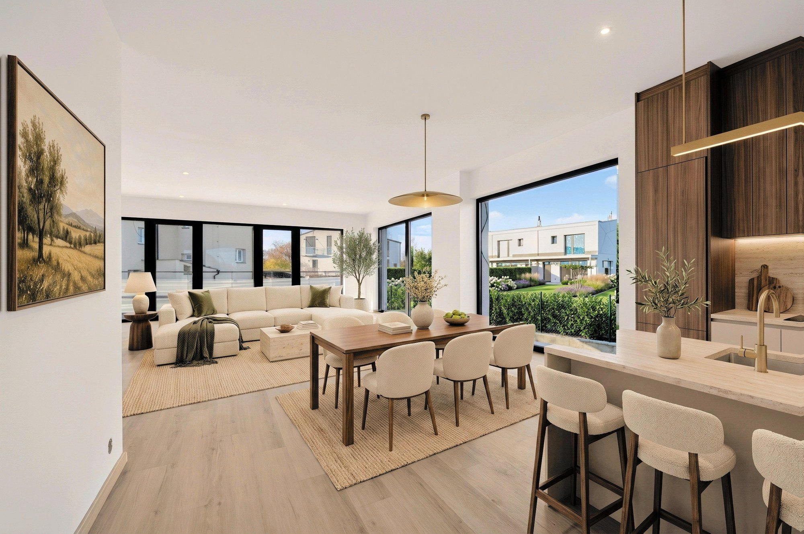
PŘEDPO
Proč: p. Sládek (formulář): „nábytek ( sedací soupravu) uzpůsobit půdorysnému rozmístění z výkresu“ · rozmístění podle jeho náčrtu z WhatsAppu 18. 11.
Co se změnilo: Nábytek podle náčrtu p. Sládka: rohová sedačka vzadu u prosklení do zahrady (dříve vlevo), jídelní stůl pro 6 uprostřed, kuchyň do L – rameno linky s pultem v popředí vpravo (místo ostrůvku), 3 barové židle za pultem, linka s horními skříňkami u severní stěny. Výhled severním oknem, levá stěna s obrazem a strop ze schválené V5.
Výhrada: Vysoké skříně kuchyně (lednice) stojí podle výkresu přesně v místě, kde stál fotograf – v tomto pohledu nejsou (jsou za/vedle kamery). Rameno linky v popředí zakrývá spodní část severního okna – odpovídá výkresu. Za opěradly barových židlí je pruh záhonu z generace (nižší než živý plot z V5).
P1194950 Obývací prostor – ke schodišti dělal: Opus
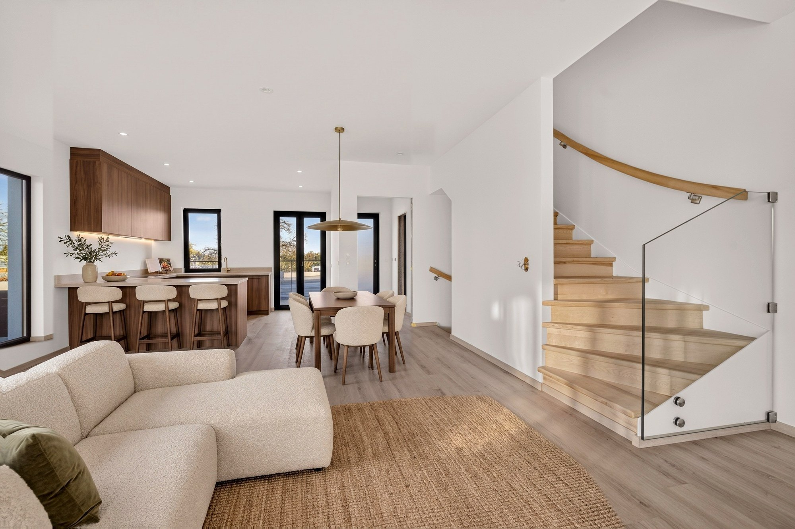
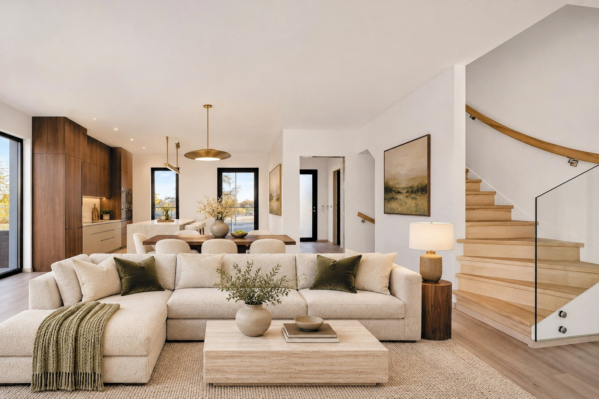
PŘEDPO
Proč: p. Sládek (formulář): „dtto, kuchyň udělat variantně podle výkresu, pokud to lze (líbí se mi víc), osadit posuvné dveře, hodící se k interiéru“ (dtto = sedačku podle půdorysu) · posuvné dveře zatím nevyšly
Co se změnilo: Nábytek podle náčrtu: rohová sedačka v popředí vlevo (kratší díl sedákem k nám), jídelní stůl pro 6 uprostřed za ní, kuchyň do L v rohu u vstupu – horní skříňky na severní stěně, rameno linky s barovým pultem a 3 barovými židlemi. Stavba (okno vlevo, stěna u zádveří, otvor se zábradlím dolů, schodiště se skleněným zábradlím) z originálu. Záběr = originální fotka (současná verze byla oříznutá/přiblížená).
Výhrada: Posuvné dveře do zádveří se nepodařilo osadit: ve 3 generacích je model dával vždy jinam (před okno nebo na stěnu přes otvor schodiště dolů) – v obraze nejsou, zůstal otevřený průchod. Vysoké skříně s lednicí (podle výkresu volně u stěny zádveří před pravou částí balkonových dveří) v obraze nejsou. Na podlaze u průchodu zůstala žlutá stavební páska z originálu.
P1194931 Obývací prostor – od kuchyně dělal: Opus
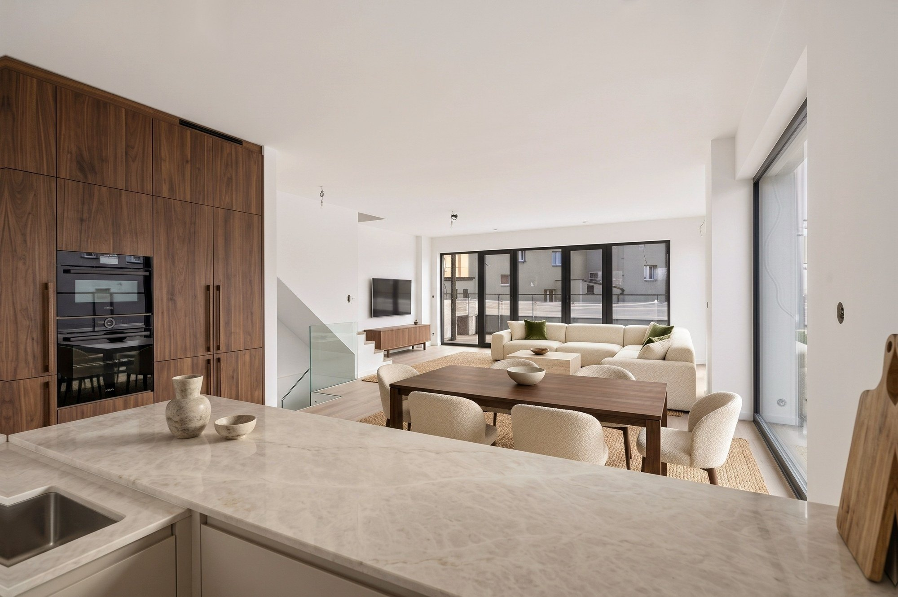
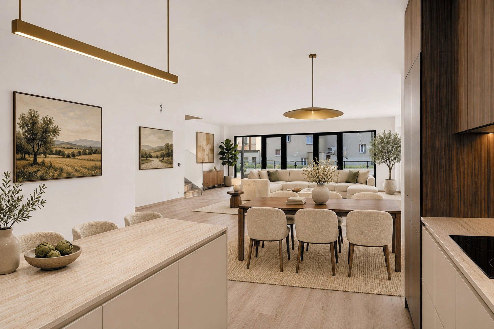
PŘEDPO
Proč: p. Sládek (formulář): „televizi se skříňkou mezi skleněným zábradlím a oknem“ · rozmístění podle jeho náčrtu z WhatsAppu 18. 11.
Co se změnilo: TV se skříňkou na jižní stěně mezi skleněným zábradlím schodiště a oknem do zahrady (Sládek). Kuchyň podle náčrtu: v popředí pracovní deska ramene linky (pohled z kuchyně), vlevo dole linka s dřezem, vlevo vysoké ořechové skříně s troubou a lednicí; jídelní stůl pro 6, rohová sedačka u prosklení do zahrady. Holý stropní vývod nahoře odstraněn.
Výhrada: Fotograf stál přímo v kuchyňské lince (podle výkresu) – deska ramene linky proto zabírá spodní třetinu záběru, linka u severní stěny je za kamerou. Tón srovnán na hlavní pohled (teplejší, hlubší černá).
P1194836 Ložnice dělal: Opus
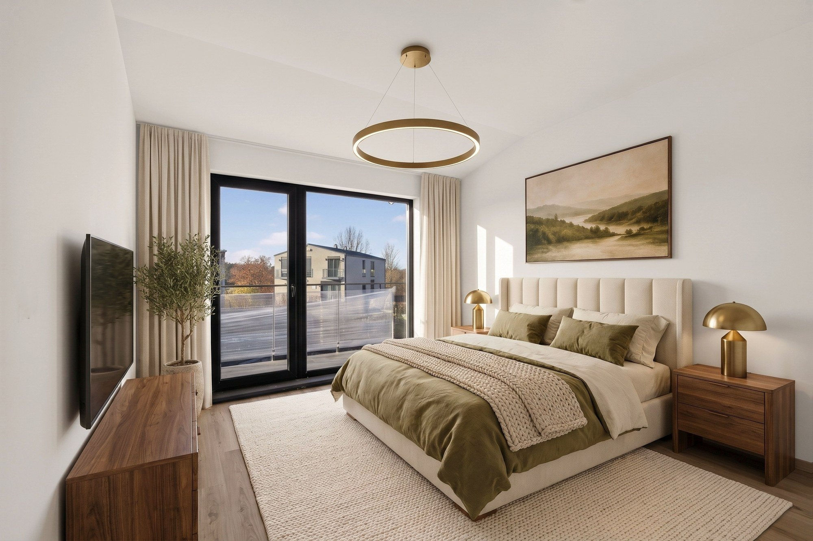
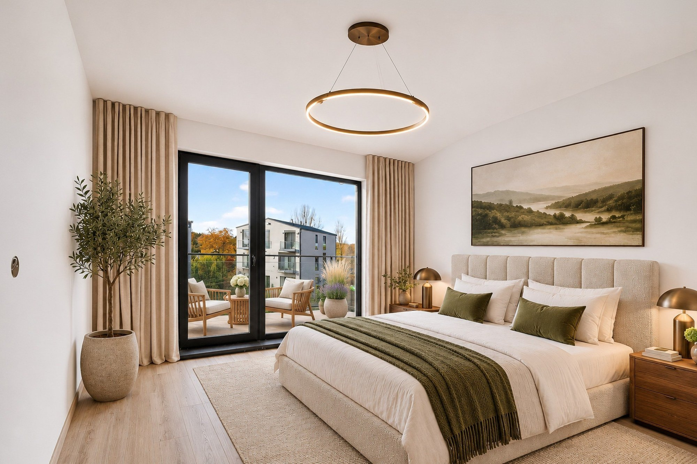
PŘEDPO
Proč: p. Sládek (formulář): „na stěnu s koupelnou skříňku s TV“ · rozmístění podle jeho náčrtu z WhatsAppu 18. 11.
Co se změnilo: Na stěnu ke koupelně (vlevo) nízká ořechová skříňka s TV na stěně proti posteli (Sládek). Manželská postel s čalouněným čelem u severní stěny, posunutá blíž k oknu podle výkresu, noční stolky po obou stranách. Záběr = originální fotka (současná verze měla jiný výřez).
Výhrada: Na balkoně je jako v originálu vidět ochranná fólie na skleněném zábradlí (současná verze měla balkon vyčištěný a s nábytkem). Vestavěné šatní skříně u příčky (podle výkresu) stojí za fotografem – v záběru nejsou.
P1194864 Pokoj (větší pokoj B2.3, 14,8 m²) dělal: Opus
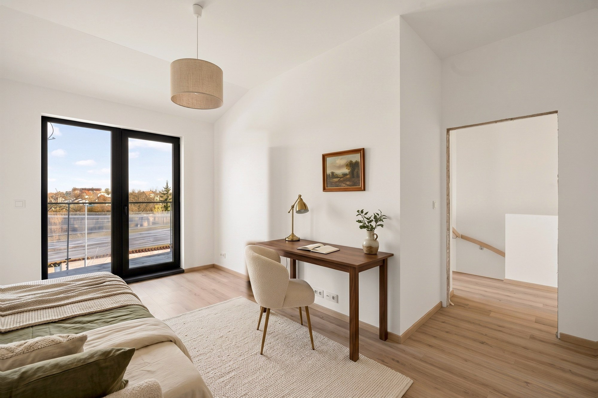
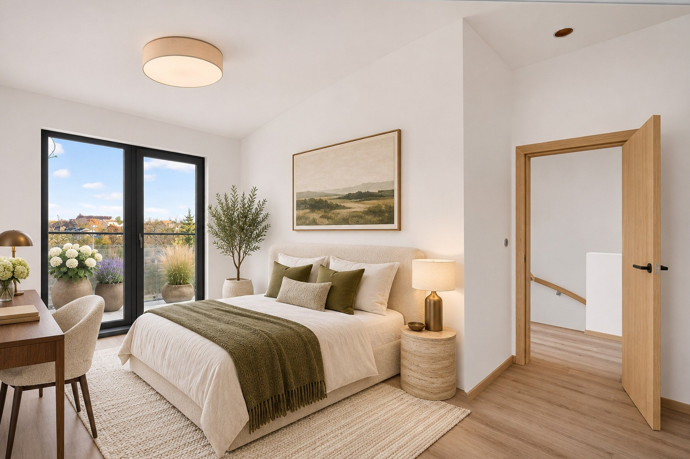
PŘEDPO
Proč: p. Sládek (formulář): „toto vůbec nesouhlasí s výkresem - posílám whatsappem, nemůžu sem přetáhnout screenshot“ · rozmístění podle jeho náčrtu z WhatsAppu 18. 11.
Co se změnilo: Úplně nové rozmístění podle náčrtu p. Sládka: místo manželské postele uprostřed je u příčky k jižnímu pokoji dlouhý psací stůl s křeslem, jednolůžko u severní stěny (v popředí vlevo, ořízlé záběrem). Fotka určena jako pokoj B2.3, focený od severozápadu (od šatních skříní) směrem k jihovýchodu – okno = balkonové dveře na východ, vpravo průchod do chodby se schodištěm.
Výhrada: Šatní skříně u příčky k ložnici a skříň v SV rohu stojí podle výkresu mimo záběr (za fotografem / u levého okraje), proto v obraze nejsou; skříň, kterou generace dala do JV rohu, byla druhou úpravou odstraněna. Výstupek stěny je ve fotce ~0,9 m západněji než v modelu (DWG) – stůl je osazený od výstupku jako v náčrtu.
P1194886 Pokoj s výhledem (menší pokoj B2.2, 9,6 m²) dělal: Opus
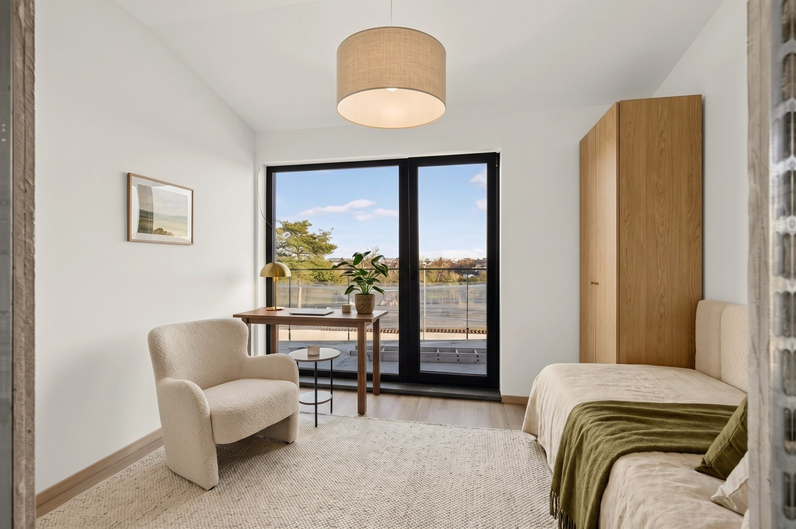
PŘEDPO
Proč: p. Sládek (formulář): „dtto“ (= nesouhlasí s výkresem) · rozmístění podle jeho náčrtu z WhatsAppu 18. 11.
Co se změnilo: Nábytek podle náčrtu p. Sládka: jednolůžko podél jižní stěny (vpravo), vysoká skříň v rohu u okna, psací stůl před levou částí balkonových dveří, křeslo se stolkem. Dříve byla postel u levé stěny a stůl jinde. Fotka určena jako pokoj B2.2, focená ze dveří od chodby (západ) k východnímu oknu.
Výhrada: 1. generace prohodila postel a skříň – použita 2. generace s přesným popisem. Ořechový stůl je užší (cca 1,2 m) než v náčrtu (0,56 × 1,20 m – sedí). Surová ostění dveří na krajích záběru zůstala z originálu.
P1184133 Garsonka u terasy dělal: Opus
PŘEDPO
Proč: p. Sládek (formulář): „asi jen sedačku odsunout od kuch linky...“
Co se změnilo: Pohovka posunuta do levého rohu u okna, mezi ní a kuchyňskou linkou je volný pruh stěny (~0,8 m) s olivovníkem; obraz posunut nad pohovku. Vše ostatní (křesla, stolek, linka, skříň přes bojler, výhled na živý plot) beze změny ze schválené verze.
Výhrada: Upraveno přestylováním schválené vizualizace (3. pokus; z prázdné fotky generátor pohovku od linky neodsunul a ztratil živý plot ve výhledu). Mimo zónu zadní stěny jsou pixely ze schválené verze. Pohovka je kompaktnější (dvoused ~1,6 m).
3D model, půdorysy a pohledy 13
pudorys_1PP pudorys_1PP dělal: Opus
PŘEDPO
Proč: p. Sládek (formulář): „rozměry dtto jako v přízemí, kotel, bojler podle fotek, pokud bude TČ, přibude ještě akumulační nádrž (jako bojler)“
Co se změnilo: rozměry a dispozice podle DWG (10,110 × 6,770 m), stěny a dveře z DWG; technická nika s kotlem v SZ rohu garáže (DWG = fotky); schodiště v pásu u středové stěny; sanita podle fotek
pudorys_1NP pudorys_1NP dělal: Opus
PŘEDPO
Proč: p. Sládek (formulář): „půdorysný rozměr bytu je 10,110m x6,770m ( vnější obrys na osu středové stěny)
boční schodiště k bazénu otočit o 90st směrěm k bazénu a s podestou...obývák s kuchyní 48,5m2, WC 1,4m2, zádveří 3,7m2, terasa do ulice-šikmá 14,5m2“ · nábytek podle jeho náčrtu z WhatsAppu
Co se změnilo: rozměry podle DWG, obývák 48,3 m² (Sládek 48,5), WC 1,41, zádveří; nábytek podle Vašeho náčrtu „nábytek“ (WhatsApp 18. 11.): rohová sedačka u okna do zahrady s konferenčním stolkem, jídelní stůl pro 6, TV se skříňkou mezi skleněným zábradlím a oknem, kuchyň do L s barovým pultem a 3 barovými židlemi (kuchyň na přání – čárkovaně); šikmá terasa 14,5 m²; schodiště do zahrady na přání otočené podél domu (čárkovaně)
pudorys_2NP pudorys_2NP dělal: Opus
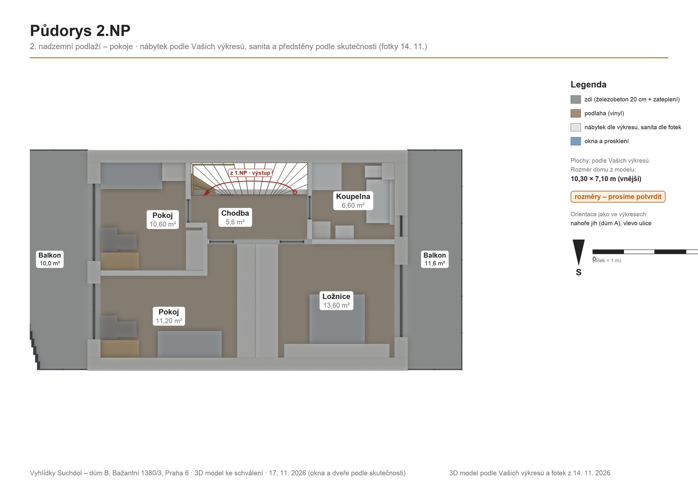
PŘEDPO
Proč: p. Sládek (formulář): „balkon do ulice 14,5m2, větší pokoj14,8m2, chodba 6m2, balkon 11,4m2, nabytek OK, jen do ložnice bych dal TV se skřínkou na stěnu ke koupelně“
Co se změnilo: obvod, koupelna, chodba a jižní pokoj podle DWG; větší pokoj 14,8 a šatní skříně podle screenshotu „nábytek“; nábytek podle screenshotu; v ložnici TV se skříňkou na stěně ke koupelně; balkony 14,5 / 11,4
pohledy pohledy dělal: Opus
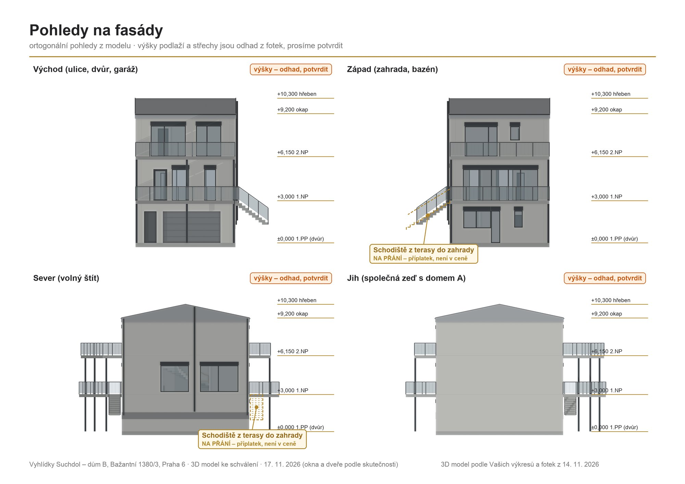
PŘEDPO
Proč: p. Sládek (formulář): „schodiště vlevo asi vypustit, bude za příplatek, jinak OK, ty sloupy uprostřed na východním pohledu odstranit, na severním pohledu odstranit prostřední sloup“
Co se změnilo: výšky podle řezu DWG (−2,840 / ±0,000 / +2,920 / okap +6,080 / hřeben +7,021); boční schodiště (na přání) z pohledů vypuštěno; prostřední sloupy pryč (východ, sever); okna podle fotek/DWG
axonometrie axonometrie dělal: Opus
PŘEDPO
Proč: p. Sládek (formulář): „nesouhlasí dvůr se situací, od bazénu je rovina, ne svah, pravý plot je víc šikmý vůči domu (viz situace), sloupy uprostřed balkonů odstranit“
Co se změnilo: zahrada od bazénu rovina (bez svahu); severní plot šikmo podle situace S1B; tvar pozemku a bazén podle situace; prostřední sloup balkonů pryč
rozlozena_podlazi rozlozena_podlazi dělal: Opus
PŘEDPO
Proč: p. Sládek: „Souhlasí“ – změna jen kvůli rozměrům z jeho výkresů DWG (17.–18. 11.)
Co se změnilo: podlaží v nových rozměrech a výškách, 2.NP s novou dispozicí a nábytkem, 1.NP s nábytkem podle Vašeho náčrtu (rohová sedačka, stůl pro 6, barové židle)
rez_v_cene rez_v_cene dělal: Opus
PŘEDPO
Proč: p. Sládek (formulář): „plynový kotel není primárně záložní zdroj, je hlavní topné méedium, záložním zdrojem se stane pouze po instalaci TČ, rekuperační jednotka je umístěna ve výklenku v garáži (viz výkres), Loxone inteligentní domácnost v ceně v základním provedení-světla, ext. žaluzie ( pokud budou objednány), garážová vrata, vrátný k vrátkům ) detailní popis je na webu: vyhlidkysuchdol.cz - nadstavby dle přání za příplatky, Akumulační baterie není písečná, ale písková!!! Skládá se z hustého potrubí naplněného vodou, umístěného v pískovm loži, které je obaleno tepelnou izolací - bude aktivována pouze po instalaci fotovoltaiky avyužívána pro ekonomičtější ohřev TUV, zateplení -16 cm šedý fasádní polystyren,“
Co se změnilo: texty: plynový kotel = hlavní zdroj (záložní až po TČ); podzemní akumulační nádrž pod podlahou 1.PP (místo „písečná baterie“); rekuperace ve výklenku garáže; Loxone v ceně (světla, vrata, vrátný); zateplení 16 cm šedý EPS
v_cene v_cene dělal: Opus
PŘEDPO
Proč: p. Sládek (formulář): „dtto jako v řezu“ (= jako v řezu)
Co se změnilo: stejné texty jako řez; nádrž, kotel, rekuperace a bojler podle DWG/fotek
na_prani_zahrada na_prani_zahrada dělal: Opus
PŘEDPO
Proč: p. Sládek (formulář): „přihřávání bazénu TČ, solnička, protiproud, schidště do zahrady otočit o 90 st směrem k bazénu (viz výkres¨), přídavná chladící jednotka k rekuperaci, propojení FVE s pískovou baterií, markýzy nad balkóny v 2.np“
Co se změnilo: schodiště podél domu s podestou; nově přihřívání bazénu TČ, solnička, protiproud, přídavná chladicí jednotka, markýzy nad balkony 2.NP, akumulační nádrž k TČ
na_prani_ulice na_prani_ulice dělal: Opus
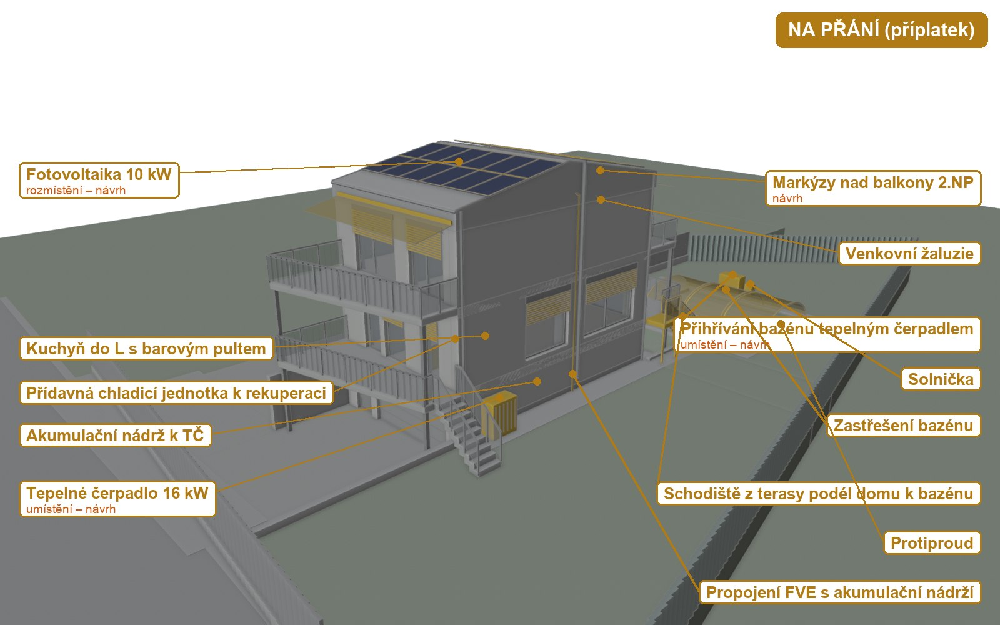
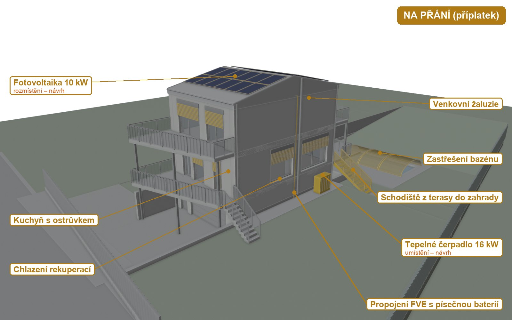
PŘEDPO
Proč: p. Sládek: „dtto“ (jako zahrada) · p. Sládek (formulář): „přihřávání bazénu TČ, solnička, protiproud, schidště do zahrady otočit o 90 st směrem k bazénu (viz výkres¨), přídavná chladící jednotka k rekuperaci, propojení FVE s pískovou baterií, markýzy nad balkóny v 2.np“
Co se změnilo: stejné doplňky jako zahrada (pohled od ulice); TČ podle DWG u severní fasády
glb_poster glb_poster dělal: Opus
PŘEDPO
Proč: Náš krok: model přestavěný podle DWG výkresů p. Sládka (skutečné provedení, řez, situace)
Co se změnilo: otáčecí 3D model pro web (GLB ×4 přegenerováno): nové rozměry, výšky, prostřední sloupy pryč, zahrada rovná, plot a bazén podle situace
konfigurator_zahrada_schodiste konfigurator_zahrada_schodiste dělal: Opus
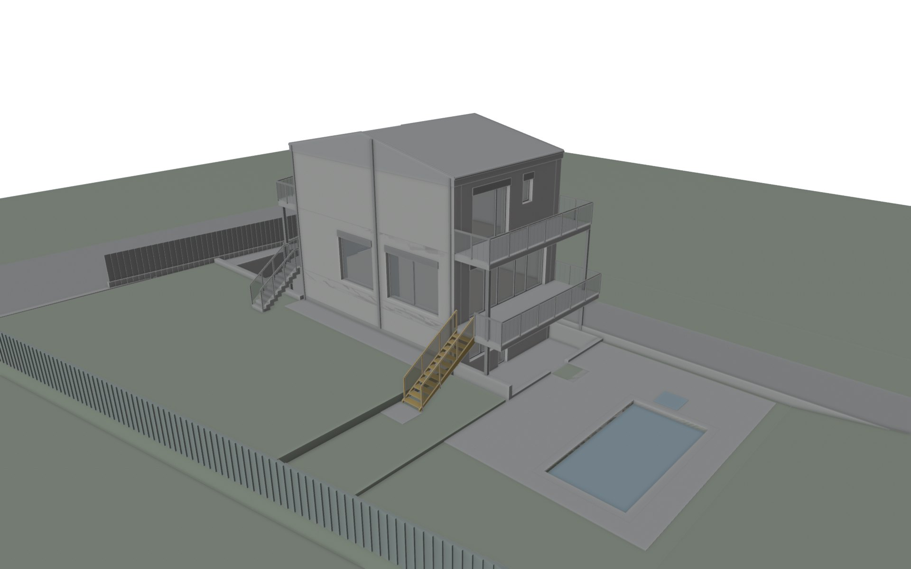
PŘEDPO
Proč: p. Sládek (formulář): „přihřávání bazénu TČ, solnička, protiproud, schidště do zahrady otočit o 90 st směrem k bazénu (viz výkres¨), přídavná chladící jednotka k rekuperaci, propojení FVE s pískovou baterií, markýzy nad balkóny v 2.np“ · Franta z telefonu: schodiště natočit podél domu, ne ven
Co se změnilo: vrstva konfigurátoru „schodiště do zahrady“: podesta + rameno podél domu k bazénu (dřív ze severního konce terasy rovně ven)
konfigurator_rez_zaklad konfigurator_rez_zaklad dělal: Opus
PŘEDPO
Proč: p. Sládek (formulář): „plynový kotel není primárně záložní zdroj, je hlavní topné méedium, záložním zdrojem se stane pouze po instalaci TČ, rekuperační jednotka je umístěna ve výklenku v garáži (viz výkres), Loxone inteligentní domácnost v ceně v základním provedení-světla, ext. žaluzie ( pokud budou objednány), garážová vrata, vrátný k vrátkům ) detailní popis je na webu: vyhlidkysuchdol.cz - nadstavby dle přání za příplatky, Akumulační baterie není písečná, ale písková!!! Skládá se z hustého potrubí naplněného vodou, umístěného v pískovm loži, které je obaleno tepelnou izolací - bude aktivována pouze po instalaci fotovoltaiky avyužívána pro ekonomičtější ohřev TUV, zateplení -16 cm šedý fasádní polystyren,“
Co se změnilo: řez konfigurátoru: nové výšky, podzemní akumulační nádrž pod podlahou 1.PP, sauna mimo niku s kotlem